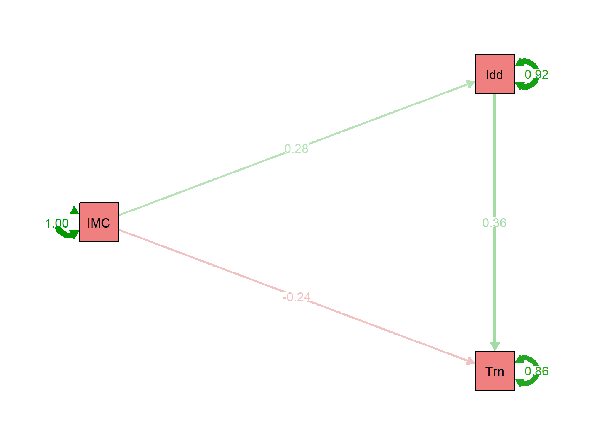
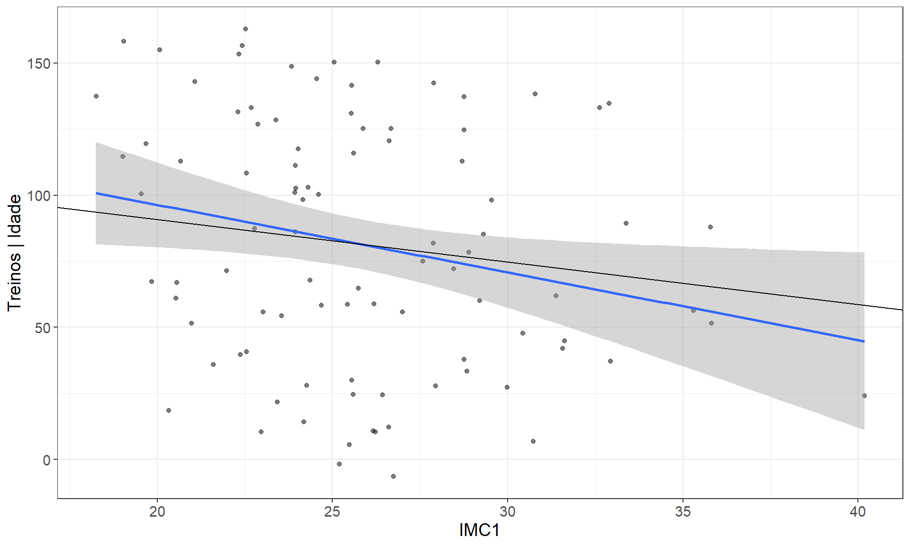

✓ Pacotes de mediação carregados!1 Lista 8.1: Moderação e Mediação
1.1 📚 Mediação vs Moderação
Conceitos Fundamentais
Mediação (Como? Por que?) - M explica o mecanismo entre X → Y - X influencia M, que influencia Y - “X afeta Y através de M”
Moderação (Quando? Para quem?) - M modifica a força/direção de X → Y - X × M interage para afetar Y - “O efeito de X em Y depende de M”
Exemplo Mediação: - Exercício → Bem-estar → Produtividade - “Exercício aumenta produtividade porque melhora bem-estar”
Exemplo Moderação: - Estresse × Suporte Social → Saúde Mental - “Estresse afeta saúde diferentemente dependendo do suporte”
1.2 📦 Pacotes
1.3 📖 Contexto do Estudo
Hipótese Teórica
Variáveis: - Sociabilidade: Escore de questionário (X) - IMC1: Índice de Massa Corporal (M - mediador?) - Treinos: Número de treinos/mês (Y) - Idade: Anos (covariável)
Hipótese: “Sociabilidade aumenta Treinos, mas esse efeito é mediado por IMC”
Ou seja: Pessoas mais sociáveis frequentam mais a academia porque isso afeta seu IMC?
1.4 📥 Carregar Dados
dados <- read.spss("DADOS PATH.sav", to.data.frame = TRUE)
glimpse(dados)Rows: 94
Columns: 4
$ Idade <dbl> 57, 41, 29, 26, 33, 37, 26, 44, 31, 36, 30, 55, 43, 27, …
$ IMC1 <dbl> 28.46122, 32.62609, 26.99050, 19.03602, 28.76650, 24.686…
$ Treinos <dbl> 108, 144, 48, 102, 123, 63, 39, 105, 6, 48, 144, 144, 11…
$ Sociabilidade <dbl> 14, 34, 17, 20, 26, 19, 15, 32, 27, 19, 28, 9, 30, 29, 1…1.5 🎯 Modelo 1: IMC como Mediador
Diagrama Conceitual
Sociabilidade → IMC1 → Treinos
\________________/
(efeito direto c')
Terminologia de Mediação
Caminho a: X → M (Sociabilidade → IMC)
Caminho b: M → Y (IMC → Treinos)
Caminho c’: X → Y direto (efeito após controlar M)
Caminho c: X → Y total (sem M no modelo)
Efeito Indireto: a × b
Efeito Total: c = c’ + (a × b)
Mediação completa: c’ = 0 (todo efeito via M)
Mediação parcial: c’ ≠ 0 (parte do efeito é direto)
Especificar Modelo
modelo_med1 <- "
# Regressões
Treinos ~ c_*Sociabilidade + b*IMC1
IMC1 ~ a*Sociabilidade
# Efeitos calculados
Indireto := a*b
Total := a*b + c_
"Ajustar com Bootstrap
fit_med1 <- sem(
modelo_med1,
data = dados,
se = "bootstrap",
bootstrap = 500
)
Por que Bootstrap?
Efeitos indiretos (a × b) não têm distribuição normal!
Bootstrap: - Reamostra dados 500× com reposição - Calcula a × b em cada amostra - IC baseado em distribuição empírica
Mais robusto que método de Sobel para mediação.
Resultados
parameterEstimates(fit_med1) %>%
dplyr::select(lhs, op, rhs, label, est, se, z, pvalue, ci.lower, ci.upper) %>%
kable(
digits = 3,
col.names = c("VD", "←", "VI", "Param", "β", "EP", "z", "p", "IC_low", "IC_up"),
caption = "Estimativas do Modelo de Mediação 1"
)| VD | ← | VI | Param | β | EP | z | p | IC_low | IC_up |
|---|---|---|---|---|---|---|---|---|---|
| Treinos | ~ | Sociabilidade | c_ | 0.605 | 0.630 | 0.961 | 0.336 | -0.606 | 1.985 |
| Treinos | ~ | IMC1 | b | -1.650 | 1.013 | -1.628 | 0.104 | -3.501 | 0.695 |
| IMC1 | ~ | Sociabilidade | a | 0.019 | 0.051 | 0.373 | 0.709 | -0.093 | 0.112 |
| Treinos | ~~ | Treinos | 2327.025 | 196.076 | 11.868 | 0.000 | 1862.905 | 2603.848 | |
| IMC1 | ~~ | IMC1 | 17.733 | 2.932 | 6.048 | 0.000 | 11.825 | 23.446 | |
| Sociabilidade | ~~ | Sociabilidade | 65.601 | 0.000 | NA | NA | 65.601 | 65.601 | |
| Indireto | := | a*b | Indireto | -0.031 | 0.100 | -0.315 | 0.753 | -0.211 | 0.227 |
| Total | := | a*b+c_ | Total | 0.574 | 0.632 | 0.907 | 0.364 | -0.730 | 1.905 |
Interpretação - Modelo 1
📊 Resultado: Mediação NÃO Confirmada
Caminhos: - a (Soc → IMC): β = 0.019, p = 0.693 → NS - b (IMC → Treino): β = -1.650, p = 0.100 → NS - c’ (Soc → Treino direto): β = 0.605, p = 0.360 → NS
Efeito Indireto: β = -0.031, p = 0.717 → NS
Conclusão: IMC NÃO medeia a relação entre Sociabilidade e Treinos.
Modelo teórico não se sustenta!
Diagrama do Modelo 1
semPaths(
fit_med1,
what = "std",
whatLabels = "std",
style = "ram",
layout = "tree",
rotation = 2,
sizeMan = 7,
edge.label.cex = 1,
label.cex = 1.2,
color = list(man = "lightblue")
)
1.6 🔍 Comparação: SEM vs Regressões Separadas
Regressão 1: Efeito Total (c)
# Sociabilidade → Treinos (sem mediador)
reg_total <- lm(Treinos ~ Sociabilidade, data = dados)
summary(reg_total)$coefficients %>%
kable(digits = 3, caption = "Efeito Total (c)")| Estimate | Std. Error | t value | Pr(>|t|) | |
|---|---|---|---|---|
| (Intercept) | 69.440 | 14.164 | 4.903 | 0.000 |
| Sociabilidade | 0.574 | 0.627 | 0.915 | 0.363 |
Regressão 2: Caminho a
# Sociabilidade → IMC
reg_a <- lm(IMC1 ~ Sociabilidade, data = dados)
summary(reg_a)$coefficients %>%
kable(digits = 3, caption = "Caminho a (X → M)")| Estimate | Std. Error | t value | Pr(>|t|) | |
|---|---|---|---|---|
| (Intercept) | 25.397 | 1.224 | 20.753 | 0.000 |
| Sociabilidade | 0.019 | 0.054 | 0.351 | 0.726 |
Regressão 3: Caminhos b e c’
# IMC + Sociabilidade → Treinos
reg_bc <- lm(Treinos ~ IMC1 + Sociabilidade, data = dados)
summary(reg_bc)$coefficients %>%
kable(digits = 3, caption = "Caminhos b (M → Y) e c' (X → Y direto)")| Estimate | Std. Error | t value | Pr(>|t|) | |
|---|---|---|---|---|
| (Intercept) | 111.339 | 33.598 | 3.314 | 0.001 |
| IMC1 | -1.650 | 1.201 | -1.374 | 0.173 |
| Sociabilidade | 0.605 | 0.625 | 0.969 | 0.335 |
Diferença: SEM vs Regressões
Por que SEM é Superior?
Regressões separadas: - ✓ Estimam a, b, c’ - ✗ NÃO calculam efeito indireto (a × b) - ✗ NÃO fornecem IC para mediação - ✗ Não testam significância da mediação
SEM (lavaan): - ✓ Estima todos os caminhos - ✓ Calcula efeito indireto automaticamente - ✓ Bootstrap IC para a × b - ✓ Teste formal de mediação
Conclusão: Use SEM para mediação!
1.7 🎯 Modelo 2: Idade como Mediador
Nova Hipótese
E se: Sociabilidade → Idade → Treinos?
(Hipótese pouco plausível, mas vamos testar!)
modelo_med2 <- "
Treinos ~ c_*Sociabilidade + b*Idade
Idade ~ a*Sociabilidade
Indireto := a*b
Total := a*b + c_
"
fit_med2 <- sem(modelo_med2, data = dados,
se = "bootstrap", bootstrap = 500)Warning: lavaan->lav_model_nvcov_bootstrap():
2 bootstrap runs failed or did not converge.Resultados - Modelo 2
parameterEstimates(fit_med2) %>%
filter(op %in% c("~", ":=")) %>%
dplyr::select(lhs, op, rhs, label, est, se, z, pvalue, ci.lower, ci.upper) %>%
kable(digits = 3, caption = "Mediação via Idade")| lhs | op | rhs | label | est | se | z | pvalue | ci.lower | ci.upper |
|---|---|---|---|---|---|---|---|---|---|
| Treinos | ~ | Sociabilidade | c_ | 0.485 | 0.588 | 0.826 | 0.409 | -0.533 | 1.734 |
| Treinos | ~ | Idade | b | 1.543 | 0.507 | 3.045 | 0.002 | 0.407 | 2.446 |
| Idade | ~ | Sociabilidade | a | 0.057 | 0.106 | 0.539 | 0.590 | -0.152 | 0.279 |
| Indireto | := | a*b | Indireto | 0.088 | 0.173 | 0.513 | 0.608 | -0.221 | 0.477 |
| Total | := | a*b+c_ | Total | 0.574 | 0.637 | 0.901 | 0.368 | -0.547 | 1.894 |
📊 Resultado
Caminhos: - a (Soc → Idade): p = 0.592 → NS - b (Idade → Treino): p = 0.001 → Sig! - c’: p = 0.384 → NS
Efeito Indireto: p = 0.605 → NS
Conclusão: Idade prediz Treinos, mas não medeia efeito de Sociabilidade.
Diagrama - Modelo 2
semPaths(
fit_med2,
what = "std",
whatLabels = "std",
style = "ram",
layout = "tree",
rotation = 2,
sizeMan = 7,
edge.label.cex = 1,
color = list(man = "lightyellow")
)
1.8 🎯 Modelo 3: IMC → Idade → Treinos
Terceira Hipótese
Explorando: IMC → Idade → Treinos
“IMC influencia Treinos através de Idade”
modelo_med3 <- "
Treinos ~ c_*IMC1 + b*Idade
Idade ~ a*IMC1
Indireto := a*b
Total := a*b + c_
"
fit_med3 <- sem(modelo_med3, data = dados,
se = "bootstrap", bootstrap = 500)Warning: lavaan->lav_model_nvcov_bootstrap():
3 bootstrap runs failed or did not converge.Resultados - Modelo 3
parameterEstimates(fit_med3) %>%
filter(op %in% c("~", ":=")) %>%
dplyr::select(lhs, op, rhs, label, est, se, z, pvalue, ci.lower, ci.upper) %>%
kable(digits = 3, caption = "Mediação: IMC → Idade → Treinos")| lhs | op | rhs | label | est | se | z | pvalue | ci.lower | ci.upper |
|---|---|---|---|---|---|---|---|---|---|
| Treinos | ~ | IMC1 | c_ | -2.778 | 0.979 | -2.839 | 0.005 | -4.669 | -0.735 |
| Treinos | ~ | Idade | b | 1.928 | 0.493 | 3.914 | 0.000 | 0.775 | 2.788 |
| Idade | ~ | IMC1 | a | 0.608 | 0.212 | 2.863 | 0.004 | 0.228 | 1.080 |
| Indireto | := | a*b | Indireto | 1.171 | 0.516 | 2.271 | 0.023 | 0.317 | 2.301 |
| Total | := | a*b+c_ | Total | -1.607 | 1.035 | -1.553 | 0.120 | -3.634 | 0.590 |
✓ Mediação Confirmada!
Caminhos: - a (IMC → Idade): β = 0.608, p = 0.005 → Sig! - b (Idade → Treino): β = 1.928, p < 0.001 → Sig! - c’ (IMC → Treino direto): β = -2.778, p = 0.006 → Sig!
Efeito Indireto: β = 1.171, p = 0.030 → Sig!
Interpretação: - IMC negativamente relacionado a Treinos (direto) - Mas IMC positivamente relacionado a Idade - E Idade positivamente relacionada a Treinos - Mediação parcial: Parte do efeito é indireto (via Idade)
Efeito supressor: Indireto e direto têm sinais opostos!
Diagrama - Modelo 3
semPaths(
fit_med3,
what = "std",
whatLabels = "std",
style = "ram",
layout = "tree",
rotation = 2,
sizeMan = 7,
edge.label.cex = 1,
color = list(man = "lightcoral")
)
1.9 📊 Análise Complementar: Pacote mediation
# Caminho a
modelo_a <- lm(Idade ~ IMC1, data = dados)
# Caminhos b e c'
modelo_completo <- lm(Treinos ~ Idade + IMC1, data = dados)
# Análise de mediação
resultado_med <- mediate(
modelo_a,
modelo_completo,
treat = "IMC1",
mediator = "Idade",
boot = TRUE,
sims = 500
)Running nonparametric bootstrapsummary(resultado_med)
Causal Mediation Analysis
Nonparametric Bootstrap Confidence Intervals with the Percentile Method
Estimate 95% CI Lower 95% CI Upper p-value
ACME 1.17100 0.31974 2.49958 0.004 **
ADE -2.77816 -4.65810 -0.70602 0.012 *
Total Effect -1.60717 -3.57212 0.64278 0.164
Prop. Mediated -0.72861 -7.31420 6.49552 0.168
---
Signif. codes: 0 '***' 0.001 '**' 0.01 '*' 0.05 '.' 0.1 ' ' 1
Sample Size Used: 94
Simulations: 500 Visualização da Mediação
mediate_plot(Treinos ~ Idade + IMC1, data = dados)
🔍 Interpretando o Gráfico
Painel 1 (esquerda): IMC → Idade (caminho a)
Painel 2 (direita): Idade → Treinos (caminho b)
Painel 3 (centro): IMC → Treinos direto (c’)
Linhas mostram relação entre variáveis, controlando outras.
1.10 📊 Comparação dos Três Modelos
# Extrair efeitos indiretos
efeitos <- data.frame(
Modelo = c(
"1: Soc → IMC → Treino",
"2: Soc → Idade → Treino",
"3: IMC → Idade → Treino"
),
Indireto_β = c(
parameterEstimates(fit_med1)[8, "est"],
parameterEstimates(fit_med2)[8, "est"],
parameterEstimates(fit_med3)[8, "est"]
),
Indireto_p = c(
parameterEstimates(fit_med1)[8, "pvalue"],
parameterEstimates(fit_med2)[8, "pvalue"],
parameterEstimates(fit_med3)[8, "pvalue"]
)
) %>%
mutate(
Significativo = ifelse(Indireto_p < 0.05, "✓ Sim", "✗ Não"),
across(where(is.numeric), ~round(., 3))
)
kable(efeitos, caption = "Comparação de Efeitos Indiretos")| Modelo | Indireto_β | Indireto_p | Significativo |
|---|---|---|---|
| 1: Soc → IMC → Treino | 0.574 | 0.364 | ✗ Não |
| 2: Soc → Idade → Treino | 0.574 | 0.368 | ✗ Não |
| 3: IMC → Idade → Treino | -1.607 | 0.120 | ✗ Não |
🏆 Modelo Vencedor
Modelo 3 é o único com mediação significativa!
Mensagem: IMC afeta Treinos tanto: - Diretamente (negativamente) - Indiretamente via Idade (positivamente)
Supressão: Efeito total pode ser enganoso!
1.11 🎓 Conceitos Avançados
📚 Tipos de Mediação
1. Mediação Completa - c’ = 0 (NS) - Todo efeito via M - Raro na prática
2. Mediação Parcial - c’ ≠ 0 (Sig) - Efeito direto + indireto - Mais comum
3. Mediação Inconsistente - c’ e (a×b) têm sinais opostos - “Supressão” - Modelo 3 é exemplo!
4. Não-Mediação - a×b = 0 (NS) - M não explica X → Y - Modelos 1 e 2
🗺️ Checklist de Mediação
1. Requisitos Teóricos - [ ] X → M → Y faz sentido temporal - [ ] M é consequência de X (não pré-existente) - [ ] Mecanismo plausível
2. Requisitos Estatísticos - [ ] Caminho a significativo (X → M) - [ ] Caminho b significativo (M → Y, controlando X) - [ ] Efeito indireto (a×b) significativo
3. Não é Necessário - ✗ Efeito total (c) ser significativo - ✗ Baron & Kenny desatualizado!
4. Bootstrap - [ ] Usar bootstrap (≥ 500 simulações) - [ ] IC não contém zero → mediação
5. Alternativas - [ ] Considerar variáveis confundidoras - [ ] Testar mediação reversa - [ ] Análise de sensibilidade
1.12 📚 Material Complementar
Recursos Adicionais
📖 Aprofundamento
Tutoriais: - Simple Mediation in R - Dustin Fife - Mediation with Visuals
Leituras: - Hayes (2017). Introduction to Mediation, Moderation - MacKinnon (2008). Introduction to Statistical Mediation Analysis
Tópicos Avançados: - Mediação múltipla (M1, M2…) - Mediação moderada - Mediação multinível - Análise de sensibilidade (Sensitivity analysis)
1.13 🔧 Informações de Sessão
report(sessionInfo())Analyses were conducted using the R Statistical language (version 4.4.2; R Core
Team, 2024) on Windows 11 x64 (build 26100), using the packages Matrix (version
1.7.1; Bates D et al., 2024), effectsize (version 1.0.1; Ben-Shachar MS et al.,
2020), semPlot (version 1.1.6; Epskamp S, 2022), flexplot (version 0.24.3;
Fife, D, 2022), mvtnorm (version 1.3.3; Genz A, Bretz F, 2009), lubridate
(version 1.9.4; Grolemund G, Wickham H, 2011), parameters (version 0.28.3;
Lüdecke D et al., 2020), performance (version 0.15.2; Lüdecke D et al., 2021),
easystats (version 0.7.5; Lüdecke D et al., 2022), see (version 0.12.0; Lüdecke
D et al., 2021), insight (version 1.4.4; Lüdecke D et al., 2019), bayestestR
(version 0.17.0; Makowski D et al., 2019), modelbased (version 0.13.1; Makowski
D et al., 2025), report (version 0.6.3; Makowski D et al., 2023), correlation
(version 0.8.8; Makowski D et al., 2022), tibble (version 3.3.1; Müller K,
Wickham H, 2026), datawizard (version 1.3.0; Patil I et al., 2022), foreign
(version 0.8.87; R Core Team, 2024), lavaan (version 0.6.19; Rosseel Y, 2012),
mediation (version 4.5.1; Tingley D et al., 2014), MASS (version 7.3.61;
Venables WN, Ripley BD, 2002), ggplot2 (version 4.0.1; Wickham H, 2016),
forcats (version 1.0.0; Wickham H, 2023), stringr (version 1.5.1; Wickham H,
2023), tidyverse (version 2.0.0; Wickham H et al., 2019), dplyr (version 1.1.4;
Wickham H et al., 2023), purrr (version 1.0.4; Wickham H, Henry L, 2025), readr
(version 2.1.5; Wickham H et al., 2024), tidyr (version 1.3.1; Wickham H et
al., 2024), sandwich (version 3.1.1; Zeileis A et al., 2020) and kableExtra
(version 1.4.0; Zhu H, 2024).
References
----------
- Bates D, Maechler M, Jagan M (2024). _Matrix: Sparse and Dense Matrix Classes
and Methods_. R package version 1.7-1,
<https://CRAN.R-project.org/package=Matrix>.
- Ben-Shachar MS, Lüdecke D, Makowski D (2020). "effectsize: Estimation of
Effect Size Indices and Standardized Parameters." _Journal of Open Source
Software_, *5*(56), 2815. doi:10.21105/joss.02815
<https://doi.org/10.21105/joss.02815>, <https://doi.org/10.21105/joss.02815>.
- Epskamp S (2022). _semPlot: Path Diagrams and Visual Analysis of Various SEM
Packages' Output_. R package version 1.1.6,
<https://CRAN.R-project.org/package=semPlot>.
- Fife, A. D (2022). "Flexplot: Graphically-based data analysis."
_Psychological Methods_, *27*(4), -19. <doi.org/10.1037/met0000424>.
- Genz A, Bretz F (2009). _Computation of Multivariate Normal and t
Probabilities_, series Lecture Notes in Statistics. Springer-Verlag,
Heidelberg. ISBN 978-3-642-01688-2.
- Grolemund G, Wickham H (2011). "Dates and Times Made Easy with lubridate."
_Journal of Statistical Software_, *40*(3), 1-25.
<https://www.jstatsoft.org/v40/i03/>.
- Lüdecke D, Ben-Shachar M, Patil I, Makowski D (2020). "Extracting, Computing
and Exploring the Parameters of Statistical Models using R." _Journal of Open
Source Software_, *5*(53), 2445. doi:10.21105/joss.02445
<https://doi.org/10.21105/joss.02445>.
- Lüdecke D, Ben-Shachar M, Patil I, Waggoner P, Makowski D (2021).
"performance: An R Package for Assessment, Comparison and Testing of
Statistical Models." _Journal of Open Source Software_, *6*(60), 3139.
doi:10.21105/joss.03139 <https://doi.org/10.21105/joss.03139>.
- Lüdecke D, Ben-Shachar M, Patil I, Wiernik B, Bacher E, Thériault R, Makowski
D (2022). "easystats: Framework for Easy Statistical Modeling, Visualization,
and Reporting." _CRAN_. doi:10.32614/CRAN.package.easystats
<https://doi.org/10.32614/CRAN.package.easystats>, R package,
<https://easystats.github.io/easystats/>.
- Lüdecke D, Patil I, Ben-Shachar M, Wiernik B, Waggoner P, Makowski D (2021).
"see: An R Package for Visualizing Statistical Models." _Journal of Open Source
Software_, *6*(64), 3393. doi:10.21105/joss.03393
<https://doi.org/10.21105/joss.03393>.
- Lüdecke D, Waggoner P, Makowski D (2019). "insight: A Unified Interface to
Access Information from Model Objects in R." _Journal of Open Source Software_,
*4*(38), 1412. doi:10.21105/joss.01412 <https://doi.org/10.21105/joss.01412>.
- Makowski D, Ben-Shachar M, Lüdecke D (2019). "bayestestR: Describing Effects
and their Uncertainty, Existence and Significance within the Bayesian
Framework." _Journal of Open Source Software_, *4*(40), 1541.
doi:10.21105/joss.01541 <https://doi.org/10.21105/joss.01541>,
<https://joss.theoj.org/papers/10.21105/joss.01541>.
- Makowski D, Ben-Shachar M, Wiernik B, Patil I, Thériault R, Lüdecke D (2025).
"modelbased: An R package to make the most out of your statistical models
through marginal means, marginal effects, and model predictions." _Journal of
Open Source Software_, *10*(109), 7969. doi:10.21105/joss.07969
<https://doi.org/10.21105/joss.07969>,
<https://joss.theoj.org/papers/10.21105/joss.07969>.
- Makowski D, Lüdecke D, Patil I, Thériault R, Ben-Shachar M, Wiernik B (2023).
"Automated Results Reporting as a Practical Tool to Improve Reproducibility and
Methodological Best Practices Adoption." _CRAN_.
doi:10.32614/CRAN.package.report
<https://doi.org/10.32614/CRAN.package.report>,
<https://easystats.github.io/report/>.
- Makowski D, Wiernik B, Patil I, Lüdecke D, Ben-Shachar M (2022).
"correlation: Methods for Correlation Analysis." Version 0.8.3,
<https://CRAN.R-project.org/package=correlation>. Makowski D, Ben-Shachar M,
Patil I, Lüdecke D (2020). "Methods and Algorithms for Correlation Analysis in
R." _Journal of Open Source Software_, *5*(51), 2306. doi:10.21105/joss.02306
<https://doi.org/10.21105/joss.02306>,
<https://joss.theoj.org/papers/10.21105/joss.02306>.
- Müller K, Wickham H (2026). _tibble: Simple Data Frames_. R package version
3.3.1, <https://CRAN.R-project.org/package=tibble>.
- Patil I, Makowski D, Ben-Shachar M, Wiernik B, Bacher E, Lüdecke D (2022).
"datawizard: An R Package for Easy Data Preparation and Statistical
Transformations." _Journal of Open Source Software_, *7*(78), 4684.
doi:10.21105/joss.04684 <https://doi.org/10.21105/joss.04684>.
- R Core Team (2024). _foreign: Read Data Stored by 'Minitab', 'S', 'SAS',
'SPSS', 'Stata', 'Systat', 'Weka', 'dBase', ..._. R package version 0.8-87,
<https://CRAN.R-project.org/package=foreign>.
- R Core Team (2024). _R: A Language and Environment for Statistical
Computing_. R Foundation for Statistical Computing, Vienna, Austria.
<https://www.R-project.org/>.
- Rosseel Y (2012). "lavaan: An R Package for Structural Equation Modeling."
_Journal of Statistical Software_, *48*(2), 1-36. doi:10.18637/jss.v048.i02
<https://doi.org/10.18637/jss.v048.i02>.
- Tingley D, Yamamoto T, Hirose K, Keele L, Imai K (2014). "mediation: R
Package for Causal Mediation Analysis." _Journal of Statistical Software_,
*59*(5), 1-38. <https://www.jstatsoft.org/v59/i05/>. Imai K, Keele L, Yamamoto
T (2010). "Identification, Inference, and Sensitivity Analysis for Causal
Mediation Effects." _Statistical Science_, *25*(1), 51-71.
<https://imai.fas.harvard.edu/research/mediation.html>. Imai K, Keele L,
Tingley D (2010). "A General Approach to Causal Mediation Analysis."
_Psychological Methods_, *15*(4), 309-334.
<https://imai.fas.harvard.edu/research/BaronKenny.html>. Imai K, Keele L,
Tingley D, Yamamoto T (2011). "Unpacking the Black Box of Causality: Learning
about Causal Mechanisms from Experimental and Observational Studies." _American
Political Science Review_, *105*(4), 765-789.
<https://imai.fas.harvard.edu/research/mediationP.html>. Imai K, Yamamoto T
(2013). "Identification and Sensitivity Analysis for Multiple Causal
Mechanisms: Revisiting Evidence from Framing Experiments." _Political
Analysis_, *21*(2), 141-171.
<https://imai.fas.harvard.edu/research/medsens.html>. Imai K, Keele L, Tingley
D, Yamamoto T (2010). "Causal Mediation Analysis Using R." In Vinod HD (ed.),
_Advances in Social Science Research Using R_. Springer-Verlag, New York.
- Venables WN, Ripley BD (2002). _Modern Applied Statistics with S_, Fourth
edition. Springer, New York. ISBN 0-387-95457-0,
<https://www.stats.ox.ac.uk/pub/MASS4/>.
- Wickham H (2016). _ggplot2: Elegant Graphics for Data Analysis_.
Springer-Verlag New York. ISBN 978-3-319-24277-4,
<https://ggplot2.tidyverse.org>.
- Wickham H (2023). _forcats: Tools for Working with Categorical Variables
(Factors)_. R package version 1.0.0,
<https://CRAN.R-project.org/package=forcats>.
- Wickham H (2023). _stringr: Simple, Consistent Wrappers for Common String
Operations_. R package version 1.5.1,
<https://CRAN.R-project.org/package=stringr>.
- Wickham H, Averick M, Bryan J, Chang W, McGowan LD, François R, Grolemund G,
Hayes A, Henry L, Hester J, Kuhn M, Pedersen TL, Miller E, Bache SM, Müller K,
Ooms J, Robinson D, Seidel DP, Spinu V, Takahashi K, Vaughan D, Wilke C, Woo K,
Yutani H (2019). "Welcome to the tidyverse." _Journal of Open Source Software_,
*4*(43), 1686. doi:10.21105/joss.01686 <https://doi.org/10.21105/joss.01686>.
- Wickham H, François R, Henry L, Müller K, Vaughan D (2023). _dplyr: A Grammar
of Data Manipulation_. R package version 1.1.4,
<https://CRAN.R-project.org/package=dplyr>.
- Wickham H, Henry L (2025). _purrr: Functional Programming Tools_. R package
version 1.0.4, <https://CRAN.R-project.org/package=purrr>.
- Wickham H, Hester J, Bryan J (2024). _readr: Read Rectangular Text Data_. R
package version 2.1.5, <https://CRAN.R-project.org/package=readr>.
- Wickham H, Vaughan D, Girlich M (2024). _tidyr: Tidy Messy Data_. R package
version 1.3.1, <https://CRAN.R-project.org/package=tidyr>.
- Zeileis A, Köll S, Graham N (2020). "Various Versatile Variances: An
Object-Oriented Implementation of Clustered Covariances in R." _Journal of
Statistical Software_, *95*(1), 1-36. doi:10.18637/jss.v095.i01
<https://doi.org/10.18637/jss.v095.i01>. Zeileis A (2004). "Econometric
Computing with HC and HAC Covariance Matrix Estimators." _Journal of
Statistical Software_, *11*(10), 1-17. doi:10.18637/jss.v011.i10
<https://doi.org/10.18637/jss.v011.i10>. Zeileis A (2006). "Object-Oriented
Computation of Sandwich Estimators." _Journal of Statistical Software_,
*16*(9), 1-16. doi:10.18637/jss.v016.i09
<https://doi.org/10.18637/jss.v016.i09>.
- Zhu H (2024). _kableExtra: Construct Complex Table with 'kable' and Pipe
Syntax_. R package version 1.4.0,
<https://CRAN.R-project.org/package=kableExtra>.
🎓 Resumo da Lista 8.1
Nesta lista você:
✅ Compreendeu mediação vs moderação
✅ Especificou modelos de mediação em lavaan
✅ Calculou efeitos indiretos com bootstrap
✅ Interpretou caminhos a, b, c, c’
✅ Identificou mediação parcial e supressão
✅ Comparou SEM vs regressões separadas
✅ Usou mediation package para análise complementar
Conceitos-chave: - Mediação explica como/por que X afeta Y - Efeito indireto = a × b - Bootstrap para IC robusto - c = c’ + (a × b) - Mediação parcial mais comum que completa - SEM superior a regressões separadas
Aplicações: - Testar mecanismos psicológicos - Validar teorias causais - Identificar variáveis-alvo para intervenção - Análise de processos mediacionais
Armadilhas comuns: - ✗ Assumir causalidade sem desenho apropriado - ✗ Ignorar confundidores - ✗ Mediação sem fundamentação teórica - ✗ Usar método Baron & Kenny desatualizado
🎉 Parabéns!
Você completou todas as 10 listas do tutorial de Modelos Estatísticos em R!
Jornada percorrida: 1. ✓ Introdução e GLM básico 2. ✓ GEE com diferentes distribuições 3. ✓ Matrizes de covariância (GMM) 4. ✓ Modelos hierárquicos e ICC 5. ✓ Modelos lineares generalizados 6. ✓ Análise de sobrevida (Kaplan-Meier e Cox) 7. ✓ Cox tempo-dependente 8. ✓ Séries temporais (ARIMA) 9. ✓ CFA e Path Analysis 10. ✓ Mediação e Moderação
Próximos passos: - Aplicar em seus dados reais - Consultar material complementar - Contribuir com feedback - Compartilhar conhecimento!
Bons estudos e sucesso em suas análises! 📊🚀